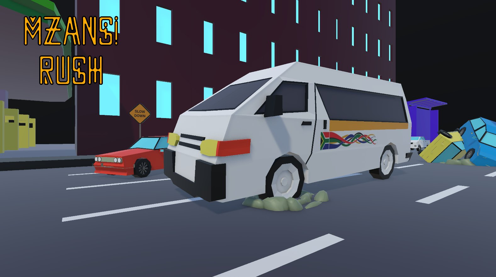

Mzansi Rush
The daily taxi hustle, at full speed.

The team
What it's about
Take on the daily hustle of a South African taxi driver, where busy roads, impatient passengers and unexpected hazards keep every journey challenging. Navigate traffic, steer clear of potholes, and deliver passengers to their destinations before the countdown reaches zero. Each successful trip earns money to improve the taxi and unlock music inspired by South African culture.
The challenge
Created for the Campus Game Jam, a three-day game jam organised by YellowDot, Mzansi Rush explored the theme of developing original games that represent African culture and experiences. The project turns the fast-moving world of South African taxi transport into an arcade experience with quick decision-making, passenger management and vehicle progression. Its local identity appeals to South African players while offering international players a fresh take on arcade driving.
Programmer
I was the programmer on a three-day game jam team.
What I built it with
How it plays
A PC single-player arcade driving game that combines high-speed navigation with endless-runner mechanics. Players control a minibus taxi, avoid obstacles, collect passengers and complete journeys before time runs out.
Drive
Weave through unpredictable roads and traffic at speed.
Collect
Pick up passengers along the way.
Deliver
Get everyone to their destination before the countdown hits zero.
Upgrade
Spend your earnings on taxi performance and new music.
What's in the game
Under the hood
Road and hazards
An endless road filled with unpredictable obstacles such as potholes.
Passengers and fares
Passengers are picked up and delivered, and each successful trip pays out.
Timer
Every journey runs against a countdown that keeps the pressure on.
Upgrades and music
Earnings buy better taxi performance and unlock South African music.
In the game
Demo video and download
Download Mzansi Rush
Free to download on itch.io. Scan the code or use the link.